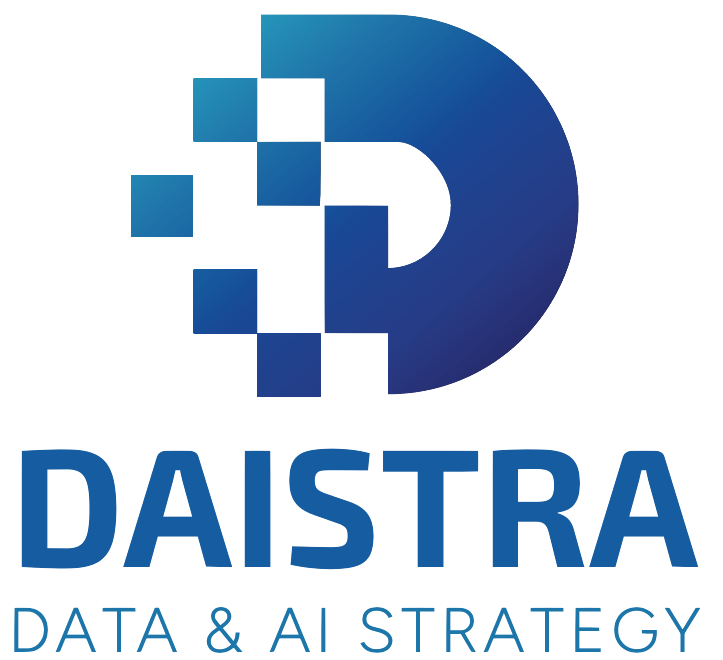

ML Project Lifecycle
Business → DAPS → FTI (F→T→I) → delivery → operate → improve → retire · 13 phases · MLOps zones A–D
When — maturity stages
13 delivery phases (0–12)
Click a phase number for detail
Intake
phases 0–2
Proof of concept
phases 3–5
Prototype
phase 6
Pilot
phases 7–8
PRD / MVP
phase 9
Production
phase 10
Operate
phase 11
Retire
phase 12
Who does what — five delivery pillars
1Discover & Intake
Approval · PII · intake
GC · Art. 6 risk · intake compliance
0EnvisionIntake
1DAPSIntake
2KPI / SLAIntake
3FeasibilityPOC
DAPS — Data-Analytic Problem Structure (de Mast & Lokkerbol 2024)
Business value
filled
Organization KPI
How will the project contribute to the organization's goals?
filled
KPIs (operational)
Which operational metrics does the organization track?
filled
Project KPI
What is the direct benefit of applying the decision framework?
Decision framework
filled
Decisions & actions
For what decisions/actions will the model be used?
filled
Decision agent
What agent takes decisions?
filled
Decision timing
When are decisions taken?
filled
Unit of analysis
At what level (customer, product, region…) are decisions made?
filled
Intervention scope
What is the scope of intervention?
Data-analytic problem
filled
Target variables
Y₁ · Y₂
What will the model predict?
filled
Predictors / features
X₁ … X₅
What are potential predictors, features?
filled
Relationship type
Correlational · causal · deductive — what is the type of relationship?
Process & tasks (P1 intake)
- Capture opportunity / regulatory need
- DAPS workshop · portfolio alignment
- ROI hypothesis · KPI definitions · draft SLA
- Data landscape sketch · go/no-go to architecture
Inputs → outputs
Opportunity · mandate→Problem statement · intake brief
Demand signal→DAPS diagram · registry row
Approved intake→Business case · application card draft
2Plan & Architecture
Catalog · lineage approval
Policy pack recommend · Art. 6
4ArchitecturePOC
Solution / MLOps design (P2 policy)
Feasibility
→
AI BOM
→
Arch doc
→
Policy pack
→
FTI plan
Tasks
- Solution & MLOps architecture
- Templates · CI/CD skeleton · env strategy
- Policy pack binding · conformance rules
3Modelling & FTI Build
Contract enforcement · data card sign-off
Card reviews · lineage
5EDAPOC
6FeatureProto
F
7TrainingPilot
T
8InferencePilot
I
EDA → F → T → I (full FTI spine)
POC (3–5)
- Feasibility · sample EDA · exploratory quality
Prototype (5–6)
- Repeatable feature pipeline · contract draft
Pilot (6–8)
- Bound policy · MLflow runs · promotion candidate
Pilot inference build (8 · I)
- Scoring path · inference pipeline · batch scoring artifact
FTI artifacts
Raw sources→Data card · contract (F)
Features · eval config→Model card · MLflow run (T)
Model · policy pack · contract OUT→Inference pipeline · app card (I)
4Deployment & Delivery
Data card final
Gateway conformance · EU AI Act evidence
9PRD deployPRD
Delivery modes (9) — batch vs realtime
Batch inferenceTrigger FTI pipeline · AZML batch endpoint · schedule
Realtime inferenceAPI · model embedded · online features · gateway
PRR / PRDCI/CD prod · gateway on · tech docs · conformance FSM
IntegrationConsumer sign-off · cards final · deploy manifest
Tasks (P3 gateway · P4 review)
- Batch inference delivery — trigger FTI pipeline
- Realtime inference delivery — API · gateway enforce
- Production Release Decision (phase 9) · integration sign-off
5Operate · Improve · Retire
Retention · purge · lineage closure
DAIGO · Art. 72 · audit · retire bundle
10IntegratedProd
11MonitorOperate
12RetireRetire
Phase 10 — Production integrated
- Consumer integration · live endpoints
- SLO dashboard · BI/ops feeds
- Adoption metrics · binding SLOs
Phase 11 — Persona-split monitoring (click column)
AT · PM — Business
- Business KPIs vs targets
- SLA adherence
- Cost / FinOps
- Value reports
- Adoption metrics
DS — Data & model
- Data quality & contracts
- Feature / schema drift
- Model performance & drift
- Retrain triggers
- Direct observability
MLE — Platform
- Infra (CPU, memory, scale)
- Pipeline health (F/T/I)
- Latency / throughput / errors
- SLO budgets
- Deploy & rollback health
Phases 11–12 deliverables (P4 · P5 · P6)
- Drift monitoring · retrain triggers · incident response
- Audit export · post-market monitoring (Art. 72)
- Decommission · archive · gateway off · retire evidence
↺ loop 11→6/7 · pivot · retire→0 envision
Feature pipelineFTI-F · phases 5–6 · orchestration · transform · contract IN
Training pipelineFTI-T · phase 7 · train · eval · MLflow registration
Inference pipelineFTI-I · phase 8 · scoring · contract OUT · I build
Deploy pipelinePhase 9 delivery · CI/CD · batch endpoint · realtime API
Who is who — roles & involvement
Role involvement by pillar (% indicative)
AT100%
PM100%
DST70%
GC80%
SD100%
DST60%
GC90%
DS100%
DE90%
DST85%
GC70%
MLE100%
GC90%
MLE100%
AT80%
DST75%
GC100%
Persona roles · hover for RACI · click for description